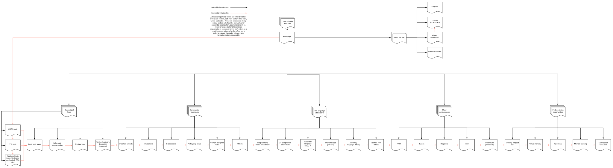

This is an (extremely work in progress) introduction to digital engineering, intended as a complete overview suitable for use as either a reference or a tutorial.
I originally created this site for a class, but I'm keeping it up after, and will be taking contributions once the class is over.
I'm making this site, because there are few complete resources that go into proper depth about modern digital systems such as computing, and even fewer are in the form of an easily-searched hyperlink-connected hierarchical website. (NAND2Tetris, for instance, is organized as an academic course - great if you're a professor, but not if you're looking for a quick overview or, conversely, an in-depth exploration of everything. It's also pigeon-holed to a specific project, and not suitable for people interested in other areas of digital design.)
Right now I just have hosting, the CSS, and a Makefile to make working on the site simple.
You can see the initially planned organization below (please excuse the light theme):
